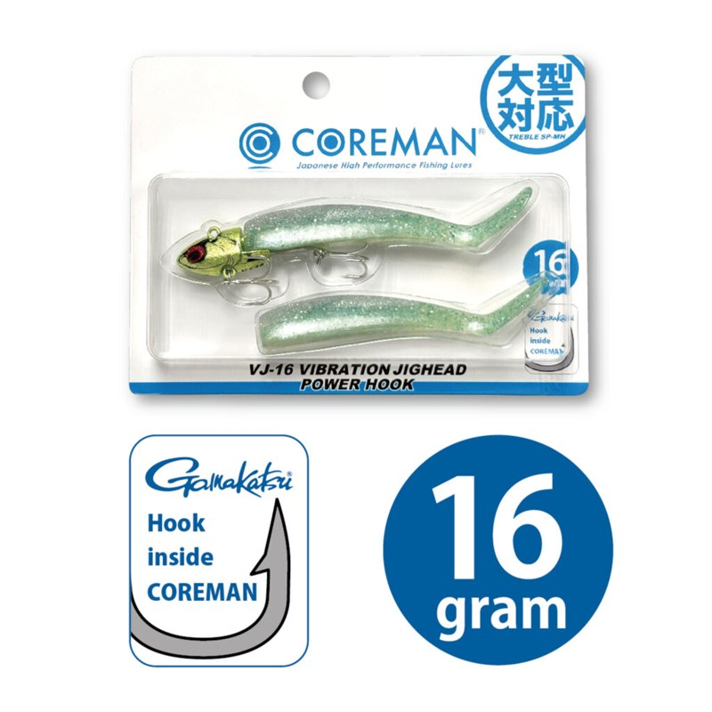
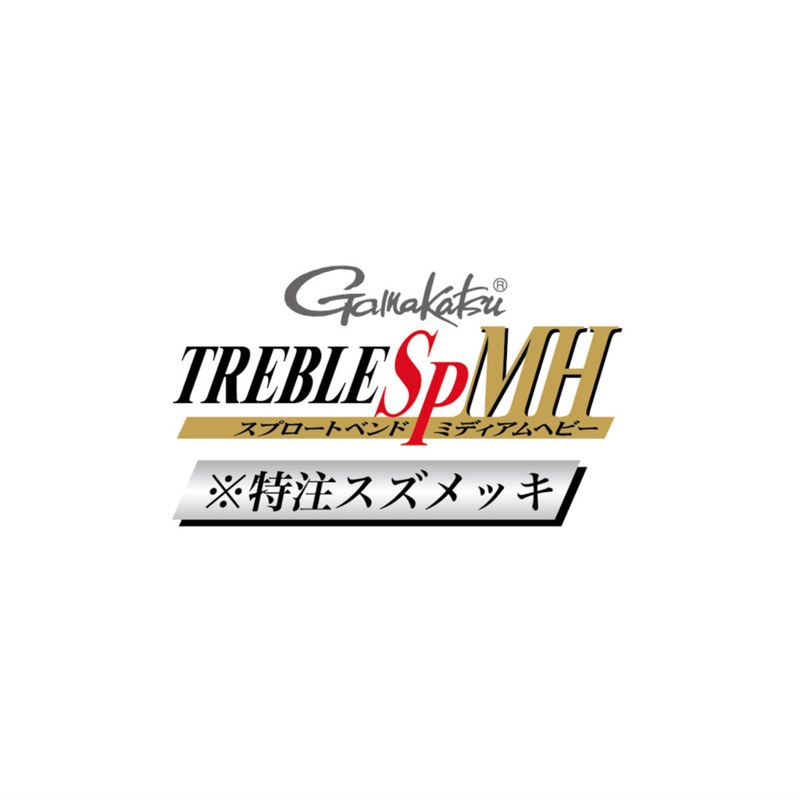
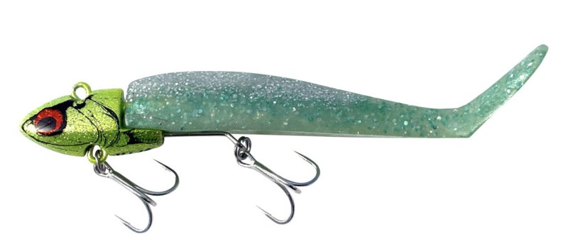
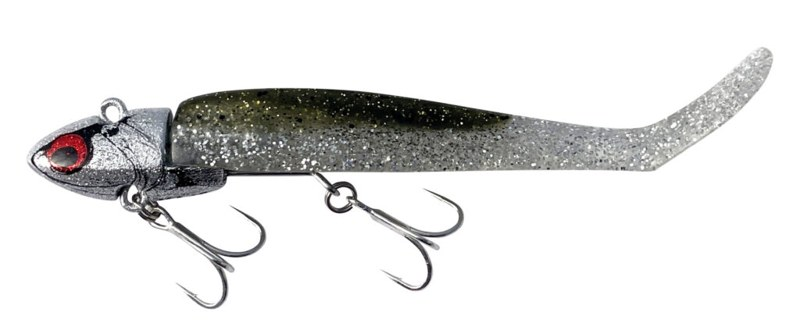
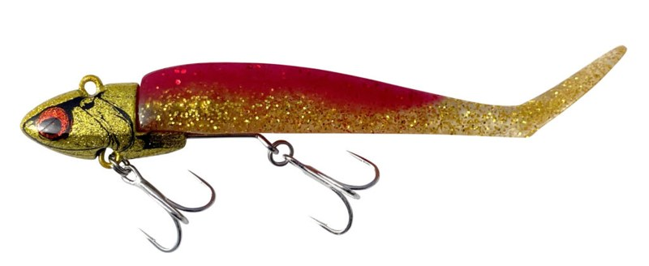
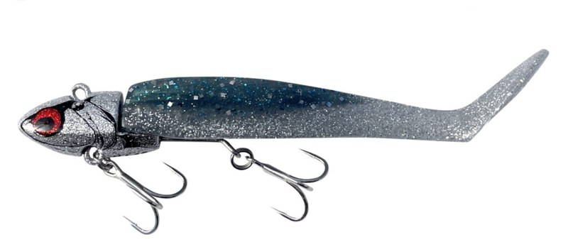

VJ-16 バイブレーションジグヘッド パワーフック
（VJ-16 VIBRATIONJIGHEAD <POWER HOOK>）
VJ-16 バイブレーションジグヘッド パワーフックは、コアマンの名作「VJ-16」に強いフックを組み合わせた、大型シーバスに対応するVJの強化フックモデルです。2026年11月に登場しました。
フックはがまかつ特注のトレブルSP-MH #8（スズメッキ）、リングは#2に強化。ワームは一回り大きいアルカリシャッド90を合わせて、アピールも強くなっています。シーバスだけでなく、青物・ヒラメなどの砂物・ロックフィッシュも狙えます。

画像出典:コアマン公式HP
スペック
- メーカー
- コアマン（COREMAN）
- タイプ
- バイブレーションジグヘッド（ジグヘッド＋ワーム）
- 全長
- 110mm
- 重さ
- ヘッド16g・ワーム4g
- フック
- トレブルSP-MH #8（がまかつ特注・スズメッキ）
- リング
- コアマン オリジナル #2
- ワーム
- コアマン アルカリシャッド 90mm
- 入り数
- ジグヘッド1個＋ワーム2本
- カラー
- 全8色
- ターゲット
- シーバス・青物・ヒラメなどの砂物・ロックフィッシュ
- 価格
- 1,650円（税込）
- 発売
- 2026年11月
▼今すぐチェック

VJ-16 パワーフックの特徴
大型シーバスに対応するVJの強化フックモデル
-
がまかつのトレブルSP-MHを特注で装着
ノーマルより強いフックを何種類も試して行き着いたのが、がまかつのトレブルSP-MH。VJのアクションを損なわずに、フッキング率とキャッチ率が高いフックとして選ばれた。
-
特注スズメッキとクリアコートで錆びに強い
フックには特注のスズメッキとクリアコーティングをほどこし、海水での変色や劣化を抑えている。
-
16gヘッド＋アルカリシャッド90でアピール強化
ヘッドはVJ-16と同じ16gのまま、ワームを90mmのアルカリシャッドに大きくした。フックとリングを強くしても、VJらしいアクションのバランスは崩さない「スペシャルセッティング」になっている。
VJ-16 パワーフックの使い方
基本はVJと同じく、キャストして沈めたら一定のスピードでただ巻きして、ボディ全体のバイブレーションで誘うのが一番です。表層から中層は巻きはじめを早めに、底付近はカウントで沈めてから巻きましょう。
フックが太くて強いぶん、大型の魚が掛かってもドラグを少し強めにして主導権をとりやすいのがパワーフックの良さ。泳ぎが傾くときは、ワームを刺し直してバランスを調整します。

画像出典:コアマン公式HP
VJ-16 パワーフックの得意な状況
ランカーサイズのシーバスが混じる場所や、青物・ヒラメがまざる河口・サーフ・堤防で出番です。
ノーマルのVJ-16では不安な大きい魚にも、フックを替えずにそのまま使えるのが強み。秋の大型ベイトの時期や、根ズレが心配な場所でも安心してやり取りできます。掛けた大型をバラしにくいので、ランカーが釣れるチャンスを逃しにくくなります。
ワンポイント
ワームはアルカリシャッド90が標準ですが、スレてきたらワームのカラーだけ替えて、同じコースを通し直すのが効果的です。ヘッドはそのままでシルエットや色が変わるので、反応が戻ることがあります。
ノーマルのVJ-16との違い
| 項目 | VJ-16 パワーフック | VJ-16 |
|---|---|---|
| 全長 | 110mm | 95mm |
| ワーム | アルカリシャッド 90mm |
アルカリシャッド 75mm |
| フック | トレブルSP-MH #8 |
が |
| リング | コアマン オリジナル #2 | コアマン オリジナル #1 |
| ヘッド | 16g | 16g |
| 価格 | 1,500円 |
1,400円 |
スペックはコアマン公式HPの記載より。ヘッドの重さは同じなので、ノーマルで実績のある場所でそのまま使えます。普段のシーバスはノーマル、大型が出る場所や青物まじりならパワーフック、と使い分けましょう。
人気カラー
VJ-16 パワーフックの人気カラーを紹介します。

ライムフレークヘッド／沖堤イワシ沖堤防のイワシを意識したカラー。ヘッドのライムで目立たせつつ、ボディはナチュラル。

シルバーフレークヘッド／シャローベイト浅場の小魚になじむ、シルバー系のナチュラルカラー。

ゴールドフレークヘッド／アカキン濁りや朝夕の暗い時間に目立つ、定番のアカキン。

シルバーフレークヘッド／イナッコボラの幼魚（イナッコ）を食べている時に合わせたいカラー。
※全8色。ほかにピンクバック・チャートチャート・キビナゴイワシ・イワシゴールドがあります。
画像出典:コアマン公式HP
▼今すぐチェック
VJ-16 パワーフックに似ているルアー
-
 VJ-16
コアマン
詳細はこちら＞
VJ-16
コアマン
詳細はこちら＞
ノーマルのVJ-16。普段のシーバス狙いならこちら。
-
 VJ-12
コアマン
詳細はこちら＞
VJ-12
コアマン
詳細はこちら＞
もっと浅い場所や小さいベイトの時に。
-
 アルカリシャッド
コアマン
詳細はこちら＞
アルカリシャッド
コアマン
詳細はこちら＞
VJ用の替えワーム。カラーを替えて誘いたい時に。